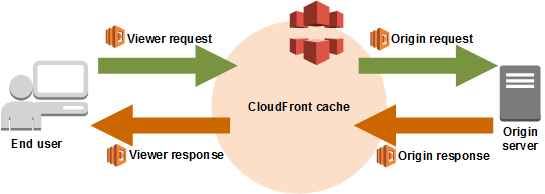

30天鐵人賽介紹 AWS 雲端世界 - 3: 雲端服務上的Global, Region, Available Zone 與Edge 介紹
在開始介紹服務之前，我們需要跟大家先介紹一個雲端服務的必備觀念－基礎設施共應分層的概念。
AWS Global Infrastructure - Region and Available Zone
AWS 雲端基礎設施是以區域(Region)與可用區域(Available Zone)為中心來建置的。區域(Region)是世界上有多個可用區域的實體位置。可用區域由一或多個分散的資料中心(Data Center)所組成，每一個AZ就是一個可獨立運作的資料中心都有備援電源、聯網和連線能力，且置放在不同的機構。
每一個區域所提供的服務單價會略微不同，所以在區域上的選擇通常都是看我們的客戶是在哪邊依據能提供最快的服務或是挑選最便宜的區域來決定，
而多個可用區域提(Multiple AZs)供則提供了我們在單一區域的的高可用性(high availability)，如下圖：
目前 AWS 在全球有 17 個地區運作(Region)，共有 46 個可用區域(AZ)，
已啟用
美國東部
維吉尼亞北部 (6)、俄亥俄 (3)
美國西部
加利佛尼亞北部 (3)、奧勒岡 (3)
亞太區域
孟買 (2)、首爾 (2)、新加坡 (2)、雪梨 (3)、東京 (3)
加拿大
中部 (2)
中國
北京 (2)、寧夏 (2)
歐洲
法蘭克福 (3)、愛爾蘭 (3)、倫敦 (2)
南美洲
聖保羅 (3)
AWS GovCloud (US-West) (2)
即將推出
- 巴林
- 法國
- 香港特別行政區，中國
- 瑞典
- AWS GovCloud (US-East)
AWS Global Infrastructure - Edge Locations
端點(Edge Location)則是 AWS 服務裡面的最末端，通常在可用區域(Available Zone)我們可以啟用多種不同的服務、運算與主機託管，而最末端的端點則可以與可用區域互動，快取所需的資料加速讀取使用或是提供簡易的運算服務(如AWS Lambda@Edge)。
這邊參考其他網路上的架構解釋如下：
Edge as Cache
這邊我們可以將程式部屬在EC2上面，並將固定時間(如每30秒)產生的檔案更新至S3長期儲存，並開放Edge Cache的功能，讓客戶可以在如果已經有人造訪過該檔案的情況下直接瀏覽該區域或是鄰近端點上面已存在的快取，大幅縮減資源存取所需的處理時間。

而由於Edge的每個請求處理較為便宜，所以這個架構也會相對的省下比較多的錢，因為你沒有浪費資源來連線至 EC2 或是 S3。
Edge as function
另外我們也可以將每個端點似為可以處理程序的機器，部屬簡單的應用程式提供他請求處理與分派的能力，如下：

更細一步的看可能就會如下圖了解其中處理的方式與流程：
而這邊上圖所提到的 CloudFront就是AWS可以提供靜態(static)與動態網頁(dynamic web)服務處理的服務，可以當作一般的CDN甚至也可以當作網路應用伺服器。
結語
當我們了解 AWS 的基礎設施的分類後其實我們也可以將此觀念放諸在 Azure 與 GCP 等不同的雲端供應商上面，只是大家用的名詞略微不同，其實本質上都是依樣的。
而不同的等級的基礎設施則會影響我們的花費與對該區域的服務品質，所以在開始使用前一定要慎選區域。
而從明天開始，我們將介紹 AWS 的重點服務。